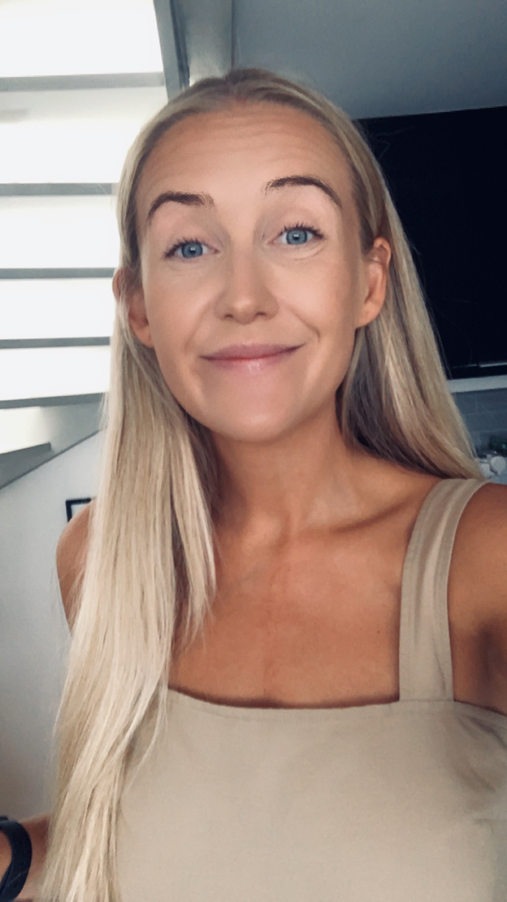

Siri Jorstad
31 years old, Oslo.
I decided to study Front-end development alongside my current job to
learn how to create beautiful websites and get new exciting job
opportunities in the future. I am passionate about design and usability
for everyone.
Experience
- 2018 - present Norwegian AS
-
Cabin Crew. Responsibility for passenger safety on board flights
domestically and abroad. Provide service to passengers during the
flight,as well as assisting with medical assistance should the need
arise.
- 2015 - 2018 Umoe AS
-
Handling all orders, table reservations forthe restaurants and
complaint handling. High focus on customer service andadditional
sales.
Education
- 2013 – 2014 Høyskolen Kristiania
- Creativity, Innovation and business development
- 2008 – 2011 Oppegård videregående skole
- Media and Communication
